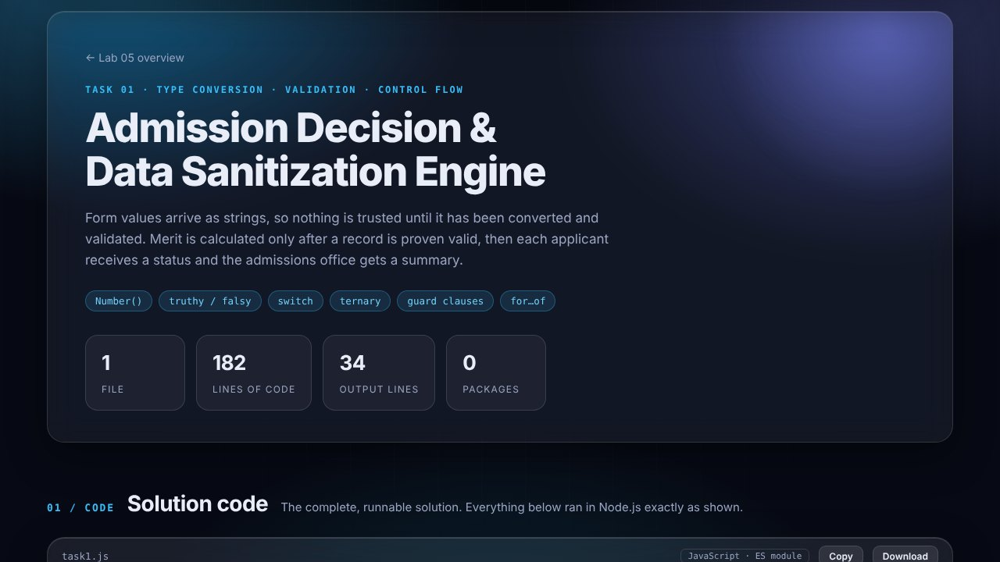
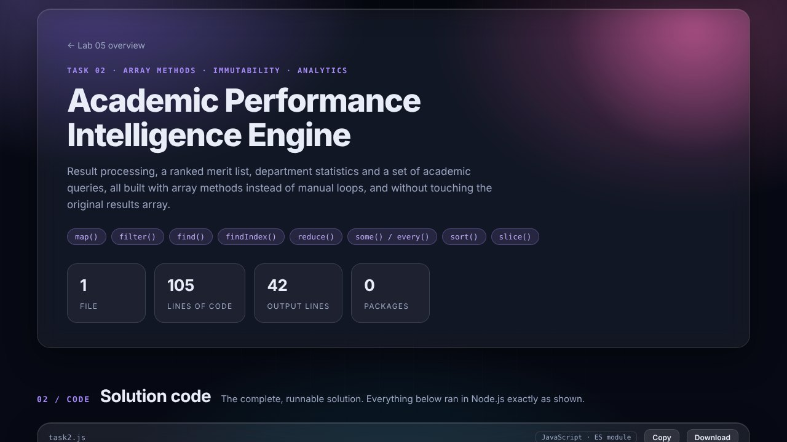
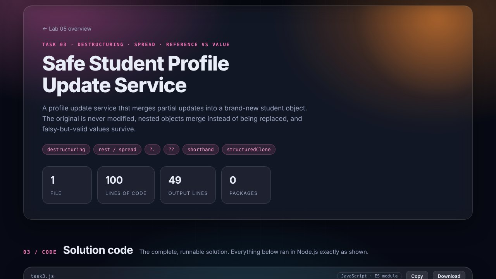
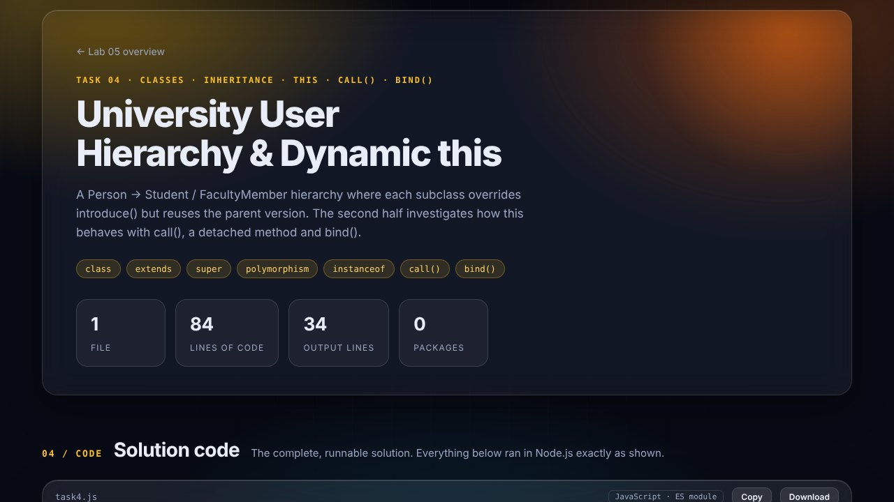
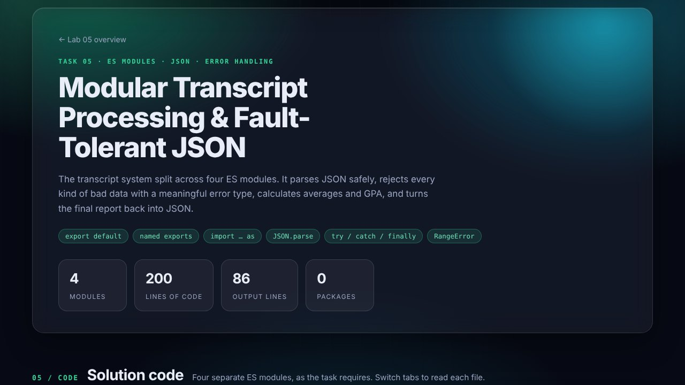
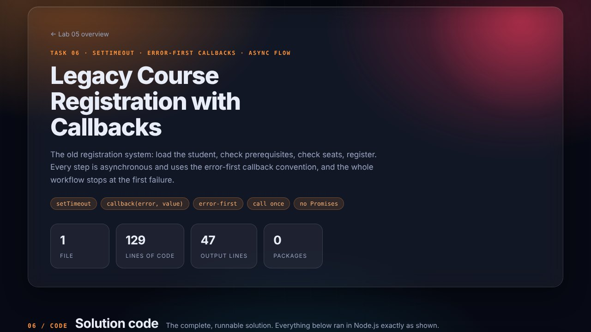
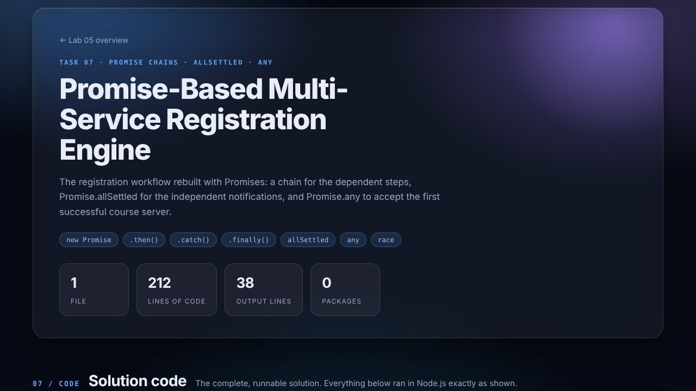
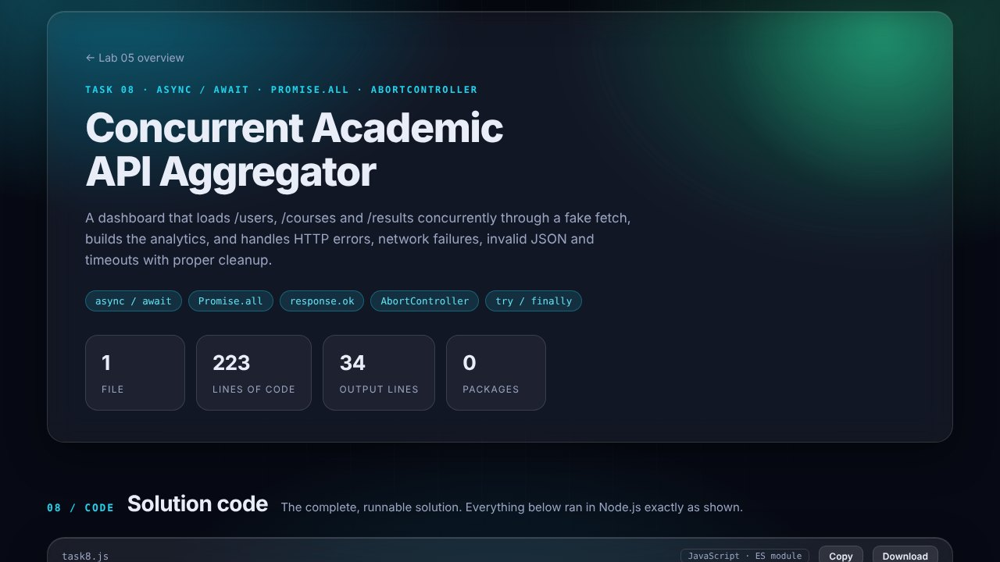

Computer Science · Lab Work
JavaScript Lab 05
Hands-on practice with advanced JavaScript: validation, array methods, destructuring, classes and this, ES modules, callbacks, Promises and async/await. All of it as the core logic of CampusFlow.
Eight tasks. One CampusFlow core.
Each card is a live preview of its task page. Hover for details, click to read the solution code and the real console output.

Admission Engine
Untrusted form strings are converted, validated and scored. Merit is only calculated once a record is proven valid, then every applicant gets a status and the office gets a summary.

Performance Engine
Grades, a ranked merit list, department statistics and academic queries, built entirely with array methods without mutating the original results.

Profile Update Service
A deep-merge update service that returns a new student object, keeps 0 / false / "" as real values, and proves object references with code.

User Hierarchy
Person → Student / FacultyMember with overriding and runtime polymorphism, then call(), a detached method that loses this, and bind() to fix it.

Transcript Modules
Four ES modules that parse JSON safely, validate transcripts, throw meaningful Error / TypeError / RangeError and build a JSON report.

Callback Registration
Four dependent asynchronous steps using error-first callbacks that stop the moment any stage fails, with no Promises and no async/await.

Promise Registration
The registration workflow as a Promise chain, post-registration services with allSettled and course lookup with Promise.any, with the choices justified.

API Aggregator
getJSON with a fake fetch that can simulate every failure, a concurrent dashboard loaded with Promise.all, and a timeout built on AbortController.
Constraints followed in every task
const and let only, strict equality (===) throughoutReproduce the output
The solutions need only Node.js 18 or newer. A package.json with "type": "module" is included so the files run as ES modules.
cd solutions node task1.js node task2.js node task3.js node task4.js node task5/main.js node task6.js node task7.js node task8.js
Submitted by
Haseeb Jalil
BS Computer Science student at Air University. This page presents the solutions and console outputs completed for JavaScript Lab 05.